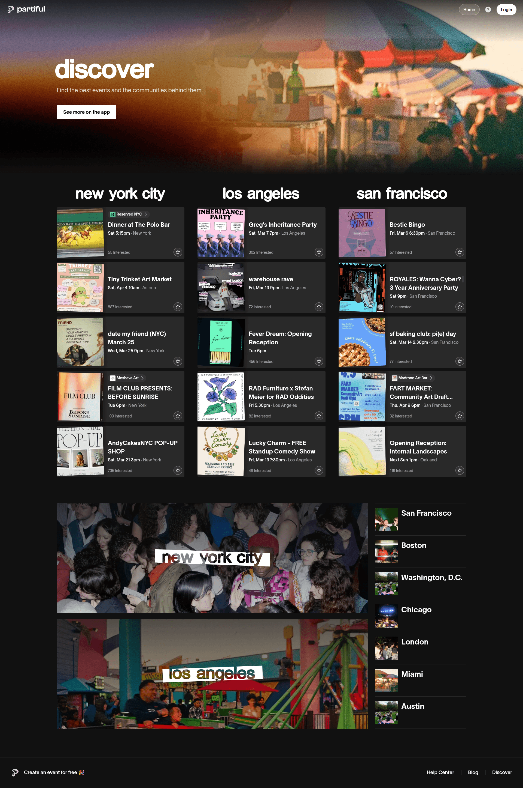
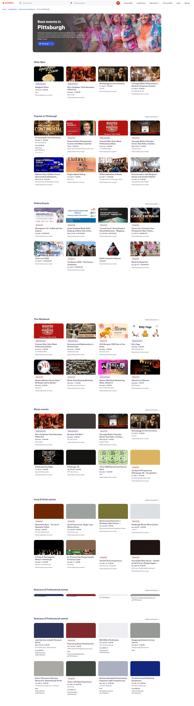
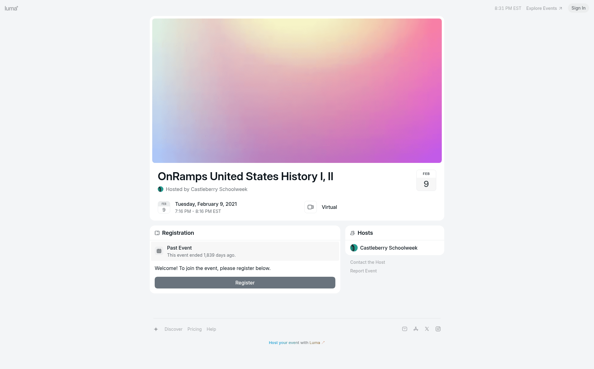
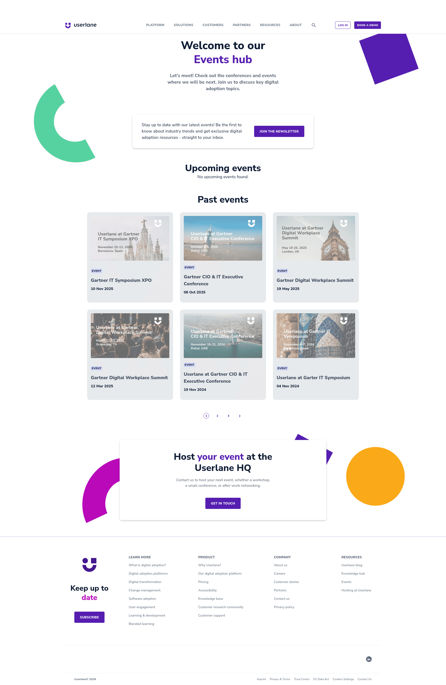

Design Research: Campus Event Social UI
Mingle should feel more like a living campus board than a quiet database. The strongest references use image-forward event cards, visible social proof, fast discovery controls, and empty states that point people to the next action.
Recommendations
- Make cards visual first. Lead with an event image or colorful fallback poster, then host, title, location, and interest action.
- Give empty states a job. "No upcoming events" should link to Discover so users can keep moving.
- Avoid fake sorting language. Remove Trending until there is a real time-decayed or velocity-based signal.
- Use expressive but structured headers. Color bands, count pills, and concise hierarchy add personality without making the app noisy.
Key Examples




Patterns
- Cards need a stable visual frame, readable metadata, and one clear primary action.
- Discovery controls should be fast and understandable.
- Social proof should be concrete: interest count, host identity, attendee hints, or community context.
- Empty states should explain the state and offer the next useful action.
Sources
- AIA Design empty state guidance
- Scouty event discovery comparison
- Partiful discover
- Eventbrite discovery
- Luma event detail
Live screenshot capture was unavailable in this workspace, so this report uses downloaded Lazyweb references and web research links.